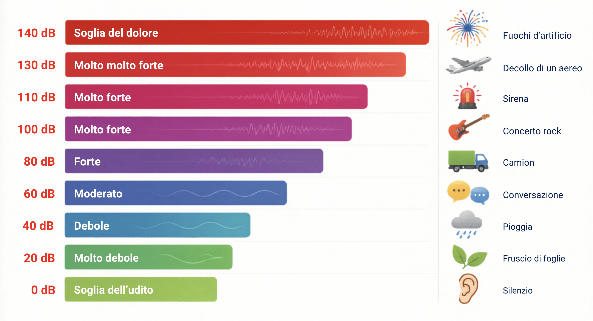

Ascolto con le orecchie
Riconosco suoni, rumori, voci, strumenti, intensità e silenzi.
In musica non si impara solo a cantare o suonare: si impara anche a rispettare il turno, il silenzio, gli strumenti, i compagni e le idee degli altri.
Sentire è percepire un suono. Ascoltare significa prestare attenzione, capire da dove arriva, cosa comunica e come ci fa reagire.
Riconosco suoni, rumori, voci, strumenti, intensità e silenzi.
Osservo il direttore, i compagni, i gesti e i segnali della classe.
Collego ciò che sento a emozioni, immagini, regole e significati.
Il silenzio non è vuoto: è lo spazio che permette alla musica e alle persone di essere ascoltate.
Ascoltare musica è bello, ma volume troppo alto e tempi troppo lunghi possono affaticare l'orecchio. Il rispetto passa anche dalla cura del nostro corpo.
L'orecchio raccoglie le onde sonore, le trasforma in vibrazioni e poi in segnali che il cervello interpreta come suoni, parole e musica.

Con cuffie o auricolari: circa 60% del volume e pause dopo 60 minuti di ascolto.
Dopo un ascolto intenso, lascia riposare le orecchie in un ambiente più silenzioso.
Fischi, orecchie ovattate o bisogno di alzare sempre il volume sono segnali da non ignorare.
Le regole non servono a bloccare la creatività. Servono a fare in modo che tutti possano partecipare senza confusione e senza sovrastare gli altri.
Parlo, canto o suono quando è il mio momento.
Controllo la voce e gli strumenti per non coprire gli altri.
Uso materiali e strumenti con attenzione, perché sono di tutti.
Mi muovo con calma e rispetto gli spazi della classe.
In un'orchestra ogni parte è diversa, ma tutte contribuiscono al risultato. Anche in classe ognuno ha un ruolo: ascoltare, aspettare, aiutare, proporre, correggersi.
Ascoltare un compagno significa lasciargli il tempo di finire e provare a capire il suo punto di vista.
La stessa musica può piacere a qualcuno e non piacere a qualcun altro. La cittadinanza passa anche dal modo in cui esprimiamo opinioni e gusti.
"A me questo brano comunica calma, anche se non è il mio genere preferito."
"Questa musica fa schifo e chi la ascolta non capisce niente."
Inserisci classe e istituto, poi scegli le regole che vuoi inserire nel patto della classe. Il patto non è una punizione: è un accordo per lavorare meglio insieme.
Classe e istituto non indicati
Rispondi scegliendo il comportamento più adatto e controlla subito il risultato.